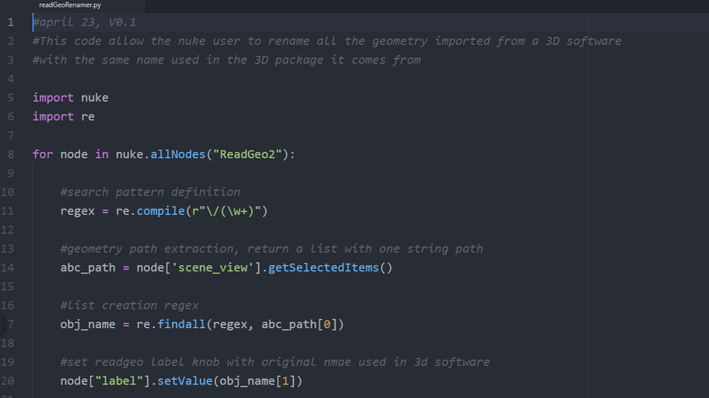
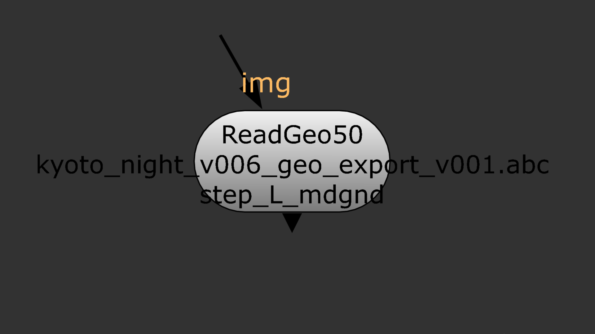

#This code allow the nuke user to rename all the geometry imported from a 3D software
#with the same name used in the 3D package it comes from
import nuke
import re
for node in nuke.allNodes("ReadGeo2"):
#search pattern definition
regex = re.compile(r"\/(\w+)")
#geometry path extraction, return a list with one string path
abc_path = node['scene_view'].getSelectedItems()
#list creation regex
obj_name = re.findall(regex, abc_path[0])
#set readgeo label knob with original name used in the 3d software
node["label"].setValue(obj_name[1])


Read Geo
I like to import in Nuke my 3D geometry in separate "readgeo" nodes, I feel it is more convenient and flexible to manage your projections. Renaming each of the nodes can be tedious. Theses few lines of code will do it for you, with the same name used in your 3D package.
Github